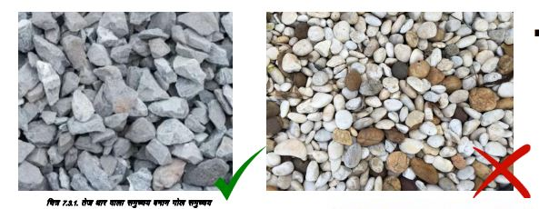

बजरी अच्छी कठोर चट्टान की बनी होनी चाहिए।
छत के स्लैब, बीम, आरसीसी बैंड और स्तंभों के लिए कंक्रीट में 12उउ से 20उउ तक के मिश्रित आकार के पत्थर के बजरी का उपयोग करें।
पत्थर के बजरी को साफ जगह पर रखें और सुनिश्चित करें कि गंदगी और मैला पानी ढेर में प्रवेश न करे।
आरसीसी कार्य में 30उउ आकार से बड़े समुच्चय का उपयोग न करें।
नदियों से आने वाले गोल बजरी का सीमेंट के साथ खराब बंधन होता है और इसलिए यह कमजोर कंक्रीट का उत्पादन करता है।.